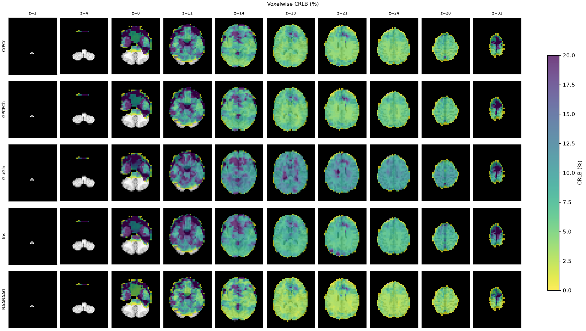
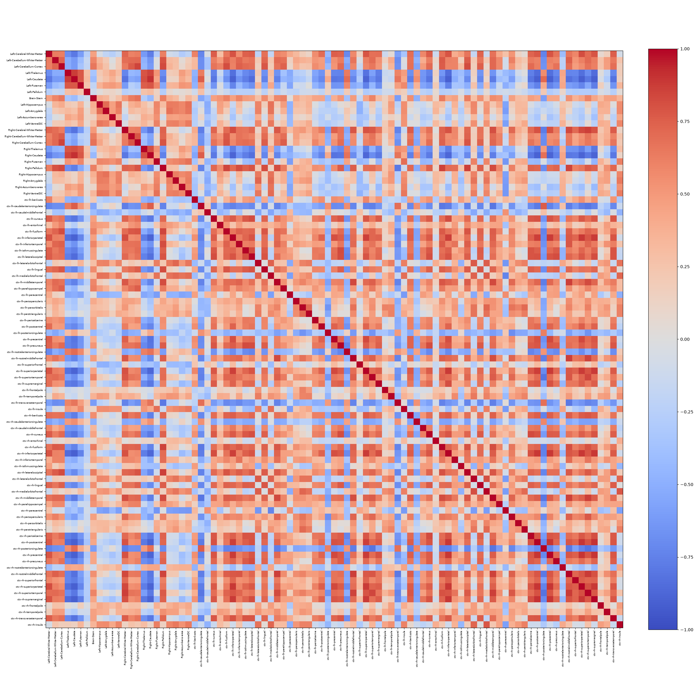

Reference metabolite map (CrPCr) overlaid on raw T1w, with the white-matter boundary outlined in light blue. Hover over the figure to cycle between the anatomy with the white-matter boundary, the same plus the metabolite overlay, and the overlay alone without the boundary.
Reference metabolite map (CrPCr) overlaid on the full-head MNI152NLin2009cAsym template at 5 mm, with the white-matter boundary outlined in light blue. Hover over the figure to cycle between the anatomy with the white-matter boundary, the same plus the metabolite overlay, and the overlay alone without the boundary.
Parcelwise CRLB quality (green reliable / red unreliable)

qc_valid_fraction is the fraction of a parcel's MRSI voxels that passed every per-voxel quality threshold in force for this run (CRLB ≤ 20.0%, SNR ≥ 4.0, linewidth ≤ 0.1 Hz), averaged over metabolites. Rows are ordered worst first. Thresholds assume the lcmodel convention for CRLB/SNR/linewidth.
parcel_id
parcel_name
hemisphere
mean_crlb
qc_valid_fraction
2032
ctx-rh-frontalpole
R
332.378
0.140
2006
ctx-rh-entorhinal
R
39.217
0.167
46
Right-Cerebellum-White-Matter
R
16.200
0.222
18
Left-Amygdala
L
22.309
0.255
7
Left-Cerebellum-White-Matter
L
12.917
0.273
2033
ctx-rh-temporalpole
R
141.957
0.300
2019
ctx-rh-parsorbitalis
R
55.024
0.306
1032
ctx-lh-frontalpole
L
20.200
0.325
1006
ctx-lh-entorhinal
L
124.678
0.356
47
Right-Cerebellum-Cortex
R
32.305
0.397
1009
ctx-lh-inferiortemporal
L
30.496
0.422
8
Left-Cerebellum-Cortex
L
17.396
0.423
1011
ctx-lh-lateraloccipital
L
8.900
0.454
16
Brain-Stem
NaN
16.260
0.550
1033
ctx-lh-temporalpole
L
19.741
0.565
2011
ctx-rh-lateraloccipital
R
7.810
0.584
1027
ctx-lh-rostralmiddlefrontal
L
8.233
0.596
2009
ctx-rh-inferiortemporal
R
38.455
0.680
1007
ctx-lh-fusiform
L
23.423
0.700
26
Left-Accumbens-area
L
14.080
0.720
2027
ctx-rh-rostralmiddlefrontal
R
18.272
0.723
2012
ctx-rh-lateralorbitofrontal
R
25.298
0.770
1012
ctx-lh-lateralorbitofrontal
L
33.986
0.771
1015
ctx-lh-middletemporal
L
22.098
0.778
58
Right-Accumbens-area
R
17.520
0.800
2002
ctx-rh-caudalanteriorcingulate
R
14.895
0.800
1003
ctx-lh-caudalmiddlefrontal
L
6.790
0.800
1014
ctx-lh-medialorbitofrontal
L
32.945
0.810
54
Right-Amygdala
R
12.145
0.818
1022
ctx-lh-postcentral
L
6.664
0.841
2007
ctx-rh-fusiform
R
17.164
0.847
17
Left-Hippocampus
L
12.586
0.855
1031
ctx-lh-supramarginal
L
6.667
0.863
1028
ctx-lh-superiorfrontal
L
8.056
0.863
1016
ctx-lh-parahippocampal
L
11.578
0.878
2022
ctx-rh-postcentral
R
6.634
0.890
2026
ctx-rh-rostralanteriorcingulate
R
12.752
0.895
53
Right-Hippocampus
R
10.965
0.896
2003
ctx-rh-caudalmiddlefrontal
R
7.679
0.903
60
Right-VentralDC
R
10.200
0.903
50
Right-Caudate
R
9.972
0.906
1008
ctx-lh-inferiorparietal
L
7.119
0.908
2029
ctx-rh-superiorparietal
R
6.919
0.911
2016
ctx-rh-parahippocampal
R
20.753
0.918
2015
ctx-rh-middletemporal
R
9.535
0.921
2031
ctx-rh-supramarginal
R
6.042
0.923
1026
ctx-lh-rostralanteriorcingulate
L
17.015
0.926
1029
ctx-lh-superiorparietal
L
7.112
0.927
2014
ctx-rh-medialorbitofrontal
R
14.456
0.927
11
Left-Caudate
L
9.333
0.928
2035
ctx-rh-insula
R
7.490
0.930
2028
ctx-rh-superiorfrontal
R
7.465
0.932
2020
ctx-rh-parstriangularis
R
9.988
0.935
1024
ctx-lh-precentral
L
6.746
0.937
1019
ctx-lh-parsorbitalis
L
7.612
0.941
28
Left-VentralDC
L
12.055
0.945
1030
ctx-lh-superiortemporal
L
7.583
0.949
1021
ctx-lh-pericalcarine
L
9.600
0.950
1002
ctx-lh-caudalanteriorcingulate
L
9.686
0.952
52
Right-Pallidum
R
9.778
0.956
2
Left-Cerebral-White-Matter
L
8.798
0.959
1020
ctx-lh-parstriangularis
L
8.074
0.966
12
Left-Putamen
L
7.541
0.968
1013
ctx-lh-lingual
L
6.770
0.968
1035
ctx-lh-insula
L
7.448
0.971
2005
ctx-rh-cuneus
R
6.789
0.971
2024
ctx-rh-precentral
R
6.928
0.974
41
Right-Cerebral-White-Matter
R
7.992
0.975
13
Left-Pallidum
L
10.689
0.978
51
Right-Putamen
R
7.622
0.978
1025
ctx-lh-precuneus
L
6.293
0.984
10
Left-Thalamus
L
7.688
0.992
1017
ctx-lh-paracentral
L
6.654
0.995
2013
ctx-rh-lingual
R
7.100
0.996
49
Right-Thalamus
R
6.915
0.997
2030
ctx-rh-superiortemporal
R
6.685
0.998
2008
ctx-rh-inferiorparietal
R
6.400
0.998
1005
ctx-lh-cuneus
L
6.708
1.000
1010
ctx-lh-isthmuscingulate
L
5.770
1.000
1001
ctx-lh-bankssts
L
5.729
1.000
2001
ctx-rh-bankssts
R
6.947
1.000
1034
ctx-lh-transversetemporal
L
5.933
1.000
1018
ctx-lh-parsopercularis
L
6.578
1.000
1023
ctx-lh-posteriorcingulate
L
5.914
1.000
2010
ctx-rh-isthmuscingulate
R
5.870
1.000
2021
ctx-rh-pericalcarine
R
6.214
1.000
2018
ctx-rh-parsopercularis
R
7.600
1.000
2017
ctx-rh-paracentral
R
6.594
1.000
2023
ctx-rh-posteriorcingulate
R
5.921
1.000
2025
ctx-rh-precuneus
R
5.876
1.000
2034
ctx-rh-transversetemporal
R
5.500
1.000
Parcellation
Not available for this configuration.
Regional metabolites: synthseg
subject
session
atlas
scale
parcel_id
parcel_name
hemisphere
metabolite
mean
median
std
weighted_mean
n_voxels
coverage
mean_snr
mean_linewidth
mean_crlb
mean_gm_fraction
mean_wm_fraction
mean_csf_fraction
sub-01
ses-01
synthseg
NaN
2
Left-Cerebral-White-Matter
L
NAANAAG
2405.072998
2514.481934
608.875427
2459.351807
1553
0.966999
15.908564
0.033428
4.269156
0.173511
0.821026
0.005463
sub-01
ses-01
synthseg
NaN
2
Left-Cerebral-White-Matter
L
GPCPCh
401.125763
411.021118
89.340561
402.679504
1551
0.965753
15.918118
0.033414
6.105093
0.173516
0.821014
0.005470
sub-01
ses-01
synthseg
NaN
2
Left-Cerebral-White-Matter
L
CrPCr
1361.433105
1384.407227
257.064362
1373.768066
1550
0.965131
15.930967
0.033382
5.718064
0.173184
0.821343
0.005473
sub-01
ses-01
synthseg
NaN
2
Left-Cerebral-White-Matter
L
GluGln
1835.884033
1852.304321
400.541473
1850.548584
1515
0.943337
15.962377
0.033534
11.215841
0.174955
0.819901
0.005144
sub-01
ses-01
synthseg
NaN
2
Left-Cerebral-White-Matter
L
Ins
1161.883545
1191.417969
225.832031
1172.219727
1530
0.952677
16.046406
0.033047
8.086274
0.171359
0.823193
0.005448
sub-01
ses-01
synthseg
NaN
7
Left-Cerebellum-White-Matter
L
NAANAAG
1529.905151
1506.990845
315.812469
1543.254272
22
0.285714
7.090909
0.043682
8.681818
0.159167
0.833624
0.007208
sub-01
ses-01
synthseg
NaN
7
Left-Cerebellum-White-Matter
L
GPCPCh
319.506592
322.610901
34.560135
320.963684
21
0.272727
7.190476
0.043762
8.714286
0.163221
0.829227
0.007552
sub-01
ses-01
synthseg
NaN
7
Left-Cerebellum-White-Matter
L
CrPCr
1273.028320
1274.551270
206.731216
1279.472046
22
0.285714
7.090909
0.043682
8.681818
0.159167
0.833624
0.007208
sub-01
ses-01
synthseg
NaN
7
Left-Cerebellum-White-Matter
L
GluGln
1754.887329
1772.791504
320.330139
1763.257446
19
0.246753
7.315790
0.043474
13.684211
0.179513
0.812140
0.008347
sub-01
ses-01
synthseg
NaN
7
Left-Cerebellum-White-Matter
L
Ins
1112.939331
1122.062134
175.737152
1119.588623
21
0.272727
7.190476
0.043762
10.904762
0.163221
0.829227
0.007552
sub-01
ses-01
synthseg
NaN
8
Left-Cerebellum-Cortex
L
NAANAAG
1785.814941
1904.429199
455.853241
1818.313599
94
0.435185
7.691489
0.039447
9.053191
0.660353
0.247128
0.092520
sub-01
ses-01
synthseg
NaN
8
Left-Cerebellum-Cortex
L
GPCPCh
339.635315
362.357849
68.567444
343.935730
94
0.435185
7.648936
0.038691
9.776596
0.658860
0.247128
0.093023
sub-01
ses-01
synthseg
NaN
8
Left-Cerebellum-Cortex
L
CrPCr
1419.427734
1520.305420
322.724915
1444.259399
93
0.430556
7.677419
0.038344
9.333333
0.659698
0.245279
0.094023
sub-01
ses-01
synthseg
NaN
8
Left-Cerebellum-Cortex
L
GluGln
1954.260132
2091.227051
466.735779
1991.719482
85
0.393519
7.800000
0.039306
13.211764
0.665637
0.231947
0.102416
sub-01
ses-01
synthseg
NaN
8
Left-Cerebellum-Cortex
L
Ins
1256.687622
1319.519409
238.630630
1270.314819
91
0.421296
7.769231
0.038857
11.340659
0.673787
0.246730
0.079484
sub-01
ses-01
synthseg
NaN
10
Left-Thalamus
L
NAANAAG
2031.003174
2023.983887
213.031311
2036.407959
52
1.000000
12.903846
0.027904
4.269231
0.278510
0.705043
0.016447
sub-01
ses-01
synthseg
NaN
10
Left-Thalamus
L
GPCPCh
379.981720
381.655945
43.041924
380.540466
52
1.000000
12.903846
0.027904
5.653846
0.278510
0.705043
0.016447
sub-01
ses-01
synthseg
NaN
10
Left-Thalamus
L
CrPCr
1227.456787
1252.215088
93.096054
1226.846680
52
1.000000
12.903846
0.027904
5.923077
0.278510
0.705043
0.016447
sub-01
ses-01
synthseg
NaN
10
Left-Thalamus
L
GluGln
1535.228271
1555.681519
106.864151
1533.811646
50
0.961538
12.900000
0.027280
12.300000
0.269941
0.712954
0.017105
sub-01
ses-01
synthseg
NaN
10
Left-Thalamus
L
Ins
998.791931
1008.242554
65.552963
998.377441
52
1.000000
12.903846
0.027904
9.634615
0.278510
0.705043
0.016447
sub-01
ses-01
synthseg
NaN
11
Left-Caudate
L
NAANAAG
2008.129272
2124.147705
361.405212
2067.381348
35
0.972222
12.857142
0.036343
5.285714
0.554391
0.383587
0.062022
sub-01
ses-01
synthseg
NaN
11
Left-Caudate
L
GPCPCh
399.914825
416.658569
48.427959
403.458740
34
0.944444
13.117647
0.036176
6.029412
0.548466
0.387688
0.063846
sub-01
ses-01
synthseg
NaN
11
Left-Caudate
L
CrPCr
1098.488647
1105.305664
112.596794
1101.031616
33
0.916667
13.333333
0.035303
6.030303
0.534783
0.399436
0.065781
sub-01
ses-01
synthseg
NaN
11
Left-Caudate
L
GluGln
1270.068237
1272.776367
145.173645
1273.978149
33
0.916667
13.363636
0.036000
13.303030
0.550069
0.384150
0.065781
sub-01
ses-01
synthseg
NaN
11
Left-Caudate
L
Ins
884.747559
890.288452
88.075577
885.871277
32
0.888889
13.593750
0.035094
9.187500
0.536009
0.396155
0.067836
sub-01
ses-01
synthseg
NaN
12
Left-Putamen
L
NAANAAG
2186.463135
2343.095703
349.942474
2261.907715
36
0.972973
13.361111
0.031222
4.222222
0.213723
0.786277
0.000000
sub-01
ses-01
synthseg
NaN
12
Left-Putamen
L
GPCPCh
438.655975
448.648193
34.764202
445.562683
36
0.972973
13.361111
0.031222
5.388889
0.213723
0.786277
0.000000
sub-01
ses-01
synthseg
NaN
12
Left-Putamen
L
CrPCr
1288.945801
1309.382080
118.985596
1308.302490
36
0.972973
13.361111
0.031222
5.250000
0.213723
0.786277
0.000000
sub-01
ses-01
synthseg
NaN
12
Left-Putamen
L
GluGln
1555.632812
1545.338379
187.287109
1579.040161
35
0.945946
13.400000
0.031429
11.085714
0.209255
0.790745
0.000000
sub-01
ses-01
synthseg
NaN
12
Left-Putamen
L
Ins
1023.065125
1021.740845
100.774117
1037.673096
36
0.972973
13.361111
0.031222
9.027778
0.213723
0.786277
0.000000
sub-01
ses-01
synthseg
NaN
13
Left-Pallidum
L
NAANAAG
2119.856445
2195.292969
211.894760
2150.090820
9
1.000000
11.000000
0.037778
7.888889
0.004271
0.995729
0.000000
sub-01
ses-01
synthseg
NaN
13
Left-Pallidum
L
GPCPCh
447.858887
457.170990
17.944355
449.807800
9
1.000000
11.000000
0.037778
9.222222
0.004271
0.995729
0.000000
sub-01
ses-01
synthseg
NaN
13
Left-Pallidum
L
CrPCr
1253.348877
1271.510498
45.064365
1258.110107
9
1.000000
11.000000
0.037778
9.111111
0.004271
0.995729
0.000000
sub-01
ses-01
synthseg
NaN
13
Left-Pallidum
L
GluGln
1460.001221
1474.265015
42.173962
1464.848633
9
1.000000
11.000000
0.037778
13.555555
0.004271
0.995729
0.000000
sub-01
ses-01
synthseg
NaN
13
Left-Pallidum
L
Ins
978.788086
989.873108
30.208830
980.425842
8
0.888889
11.625000
0.035875
12.125000
0.000000
1.000000
0.000000
sub-01
ses-01
synthseg
NaN
16
Brain-Stem
NaN
NAANAAG
1272.587036
1263.411499
604.559875
1397.715210
59
0.561905
9.491526
0.056593
8.237288
0.106810
0.744611
0.146578
sub-01
ses-01
synthseg
NaN
16
Brain-Stem
NaN
GPCPCh
280.497192
303.429138
99.606674
299.541962
58
0.552381
9.568966
0.056552
9.327586
0.107306
0.748403
0.142255
sub-01
ses-01
synthseg
NaN
16
Brain-Stem
NaN
CrPCr
1006.040527
1099.638428
413.640747
1087.141235
59
0.561905
9.491526
0.056593
10.000000
0.106810
0.744611
0.146578
sub-01
ses-01
synthseg
NaN
16
Brain-Stem
NaN
GluGln
1325.765137
1438.702515
528.927368
1430.138184
57
0.542857
9.473684
0.056912
12.087719
0.099831
0.751767
0.146330
sub-01
ses-01
synthseg
NaN
16
Brain-Stem
NaN
Ins
890.402222
968.027466
304.934326
939.789246
56
0.533333
9.750000
0.055875
12.267858
0.111138
0.739417
0.147336
sub-01
ses-01
synthseg
NaN
17
Left-Hippocampus
L
NAANAAG
1392.455933
1385.533447
500.551117
1531.515991
27
0.931034
9.925926
0.048185
7.296296
0.814024
0.142858
0.043117
sub-01
ses-01
synthseg
NaN
17
Left-Hippocampus
L
GPCPCh
308.581512
315.562378
67.197762
323.734528
26
0.896552
10.115385
0.048423
8.423077
0.806872
0.148353
0.044775
sub-01
ses-01
synthseg
NaN
17
Left-Hippocampus
L
CrPCr
1084.453857
1104.513672
288.290985
1152.744751
25
0.862069
10.360000
0.047880
8.440000
0.799150
0.154287
0.046563
sub-01
ses-01
synthseg
NaN
17
Left-Hippocampus
L
GluGln
1356.092163
1403.780151
409.033020
1463.351196
24
0.827586
9.833333
0.049000
13.041667
0.799001
0.159086
0.041914
sub-01
ses-01
synthseg
NaN
17
Left-Hippocampus
L
Ins
946.155029
942.221069
205.644196
987.438293
22
0.758621
10.772727
0.046091
10.727273
0.786831
0.175282
0.037886
sub-01
ses-01
synthseg
NaN
18
Left-Amygdala
L
NAANAAG
1056.460205
1045.339233
225.418823
1068.651611
3
0.272727
8.000000
0.080000
9.000000
0.789930
0.210070
0.000000
sub-01
ses-01
synthseg
NaN
18
Left-Amygdala
L
GPCPCh
291.843292
287.106323
34.832756
293.908661
3
0.272727
8.000000
0.080000
8.666667
0.789930
0.210070
0.000000
sub-01
ses-01
synthseg
NaN
18
Left-Amygdala
L
CrPCr
863.997131
826.112244
96.292038
871.084900
3
0.272727
8.000000
0.080000
12.000000
0.789930
0.210070
0.000000
sub-01
ses-01
synthseg
NaN
18
Left-Amygdala
L
GluGln
1045.902588
974.249817
115.415565
1055.672729
3
0.272727
8.000000
0.080000
12.666667
0.789930
0.210070
0.000000
sub-01
ses-01
synthseg
NaN
18
Left-Amygdala
L
Ins
762.616211
762.616211
72.349640
771.659912
2
0.181818
8.000000
0.075500
14.500000
0.870083
0.129917
0.000000
Connectivity
Connectivity matrix (spearman)

MRSinMRS
Parameter
Value
Unit
AcquisitionDurationMS
389
ms
Averages
1
AveragingMode
N.A.
CoilElements
N.A. (synthetic)
CombinedMetabolites
tNAA (NAA+NAAG), tCr (Cr+PCr), Cho (GPC+PCh), Ins (mI), Glx (Glu+Gln)
CompressedSensingAccelerationFactor
N.A. (synthetic)
DataProcessing
Model-synthesized signal (3D U-Net trained on real template subjects); no k-space reconstruction
SynthMRSI-Project is a synthetic dataset: real T1w anatomicals paired with model-synthesized MRSI metabolite signal (3D U-Net; see MRSIPrep manuscript, Validation Datasets). No real MRSI acquisition underlies these values -- numeric geometry/timing fields (TE, RepetitionTime, FOV, resolution, matrix size, field strength, etc.) record the acquisition protocol the synthetic signal generation was matched to; fields describing a specific real pulse sequence, reconstruction, or hardware are marked N.A. since none was used.
Orientation
Transverse
PhaseEncoding
N.A. (synthetic)
PreparationScans
N.A. (synthetic)
QualityMetrics
SNR, CRLB, FWHM (synthesized, not derived from spectral fitting)
Quantification
N.A. (synthetic; not derived from spectral fitting)
RFCoils
N.A. (synthetic)
RemoveOversampling
N.A.
RepetitionTime
0.457
s
ResolutionMM3
5 x 5 x 5.2
mm
RotationDeg
-0.79
°
SaturationBands
N.A. (synthetic)
Scanner
N.A. (synthetic; no scanner)
Sequence
N.A. (synthetic; not acquired with a real MRSI sequence)
If you use MRSIPrep, please cite: Lucchetti, F., Céléreau, E., Jenni, R., Ledoux, J.-B., Eliez, S., Delavari, F., Hagmann, P., Alemán-Gómez, Y., Klauser, A., & Klauser, P. (2026). MRSIPrep: A Standardized Post-Quantification Framework for Preprocessing Whole-Brain Magnetic Resonance Spectroscopic Imaging. bioRxiv. doi:10.64898/2026.09.11.750896. A downloadable BibTeX entry is in CITATION.cff in the MRSIPrep repository.
MRSinMRS
MRSI acquisition reporting follows the MRSinMRS minimum reporting standard (Lin et al. 2021).
Runtime
Per-step duration
nproc: 2 | nthreads: 8
Excludes this report-generation step's own duration (not yet known while it's still running) and any time spent before this recording's pipeline started (e.g. queued behind other recordings under --nproc).
PROC computed this run · REUSED existing outputs reused (re-run with --overwrite to recompute) · N/A not requested by this configuration · FAILED raised an error
Step
Outcome
Duration
% of total
Tissue segmentation
PROC
1m 02.2s
24.7%
Anatomical preparation
PROC
0.0s
0.0%
MRSI loading
PROC
0.0s
0.0%
Spike filtering
PROC
4.6s
1.8%
T1 saturation correction
PROC
0.0s
0.0%
MRSI reference image
PROC
0.0s
0.0%
MRSI voxel-quality masks
PROC
0.0s
0.0%
MRSI-to-T1w registration
PROC
1m 01.1s
24.3%
T1w-to-template registration
PROC
1m 39.4s
39.5%
Tissue probability maps in MRSI space
PROC
0.6s
0.2%
Partial volume correction
PROC
0.1s
0.1%
Resampling MRSI maps to T1w/MNI space
PROC
19.5s
7.8%
Signal leakage QC
PROC
0.7s
0.3%
SynthSeg parcellation and QC
REUSED
2.2s
0.9%
Regional metabolite extraction
PROC
0.6s
0.2%
Regional metabolic profiles and connectivity
PROC
0.6s
0.2%
Parcellation (chimera/atlas) parcellation_mode=synthseg, requires chimera or atlas